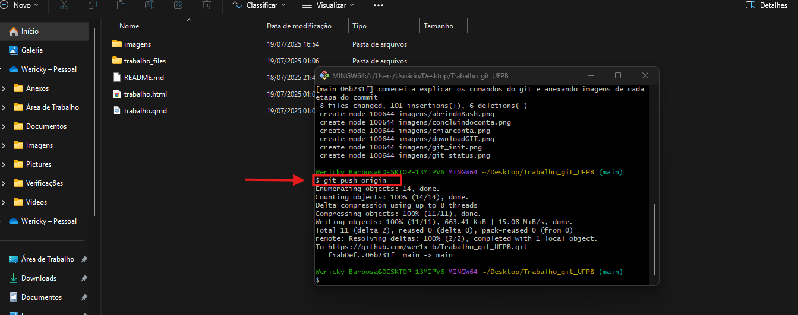

Primeira Avaliação: Relatório em Quarto acerca de GitHub, pip e python
Apresentação
Neste manual será verificado as funcionalidades do Git, GitHub, pip e conceitos iniciais do Python. com demonstrações e passo a passo.
Git e GitHub
Git é uma ferramenta que permite “versionar” projetos em cada uma de suas etapas. Desenvolvida por Linus Torvalds (criador do Linux) em 2005 baseada em um sistema chamado BitKeeper que passou a ser um serviço pago, o Git surge como uma alternativa gratuita porém com metas como ser mais rápido, simples e com Capaz de lidar com projetos grandes como o núcleo o Linux com eficiência (velocidade e tamanho dos dados).
O GitHub foi fundado em 2008 por Tom Preston-Werner, Chris Wanstrath e PJ Hyett. Ele começou como uma plataforma de hospedagem de código baseada em Git, permitindo que desenvolvedores colaborassem em projetos de software, rastreassem mudanças e gerenciassem o código-fonte de forma eficiente. Em junho de 2018, a Microsoft anunciou a aquisição do GitHub por US$ 7,5 bilhões em ações. Essa aquisição foi uma surpresa para muitos na comunidade de desenvolvedores, pois o GitHub sempre foi visto como uma empresa independente e uma defensora fervorosa do software de código aberto.
No entanto, a Microsoft afirmou que estava comprometida em manter o GitHub como uma plataforma aberta e neutra, continuando a investir em sua expansão e melhorias.
Primeiros passos
Como instalar o Git
O Git pode ser baixado livremente no site oficial no link https://git-scm.com/downloads, logo selecionando a versão do seu sistema operacional. conforme imagem a baixo.

GitSiga as indicações do assistente de instalação até que o procedimento seja concluído!
Como preparar o GitHub
Diferente do Git, o GitHub apesar de possuir uma versão para desktop não necessita ser instalado para funcionar, pois trata-se de uma plataforma online, porém para utilizar desta ferramenta, será necessário a criação de uma conta gratuita, a conta poderá ser criada no link https://github.com/ conforme os seguintes passos:

GitHubOs campos a seguir deverão ser preenchidas para prosseguir com a criação de conta.

Uma vez que a conta tenha sido criada, o usuário estará livre para acessar repositórios e projetos públicos dos demais usuários e também criar repositórios próprios.
Como utilizar estas ferramentas
Em uma pasta vazia, apertando com o botão direito do mouse, podemos então iniciar o painel de comandos do Git, denominado “Bash”.

Para que possamos utlizar destas ferramentas, necessitamos aprender a utilizar os comandos, como por exemplo o git init que serve para inicializar o git.
git init
Git initLogo, pode se executar o comando git status para verificar possíveis mudanças na pasta observada, neste exemplo, utilizemos uma pasta previamente utilizada.
git status
Git status no bashNote que neste exemplo, ouveram 2 modificações, marcadas por “modified” e então podemos adicionar estas modificações com o comando git add .
git add .o espaço e o ponto significam que será adicionado todas as modificações

Git add . no bashUma vez que todas as modificações desejadas foram adicionadas, pode-se criar uma espécie de “checkpoint” ou seja, um ponto onde o progresso seja salvo, utilizando de um comando chamado de git commit.
git commit
Git commit no bashA vantagem de criar Commit´s ao longo do projeto é que pontos de retorno são criados, da seguinte forma, podemos regressar a determinadas etapas do progresso, como uma espécie de “viagem no tempo” revertendo todo o projeto, etapas e arquivos ao exato ponto do commit escolhido, para visualizar os commits, pode ser utilizado o comando git log.
git log
git log para verificar os commitsalternativamente podemos utilizar o comando git log --oneline para verificar esta lista de forma mais compacta, veja o exemplo disto abaixo.
git log --oneline
git log --oneline para verificar os commits de forma compactaPara enviar o projeto junto a todos os conteúdos salvos em commits, utilizaremos o comando git push origin caso tenhamos clonado a pasta previamente em repositório ou colocamos o link do repositório ao invés de “origin” e então o Git irá agir em conjunto com o Github.

git push origin para enviar os commits direto para o repositório no GitHubUm breve resumo do que utlizamos para verificar, adicionar, realizar o commit e então enviar ao GitHub: 
Agora, indo até o repositório no GitHub, podemos ver que toda a pasta foi adicionada ao repositório.

Alternativamente temos o git pull que faz o inverso do comando anterior, pois ele “puxa” os arquivos do GitHub para o computador.
Agora que os arquivos estão salvos no repositório, é possível clonar os arquivos para o computador, usanco o comando git clone, acompanhado do url do repositório, como mostrado a seguir:
git clone
e então o código poderá ser executado do bash da seguinte forma:

Python
Trata-se de uma linguagem de programação criada por Guido van Rossum em meados de 1991, com o objetivo de ser uma linguagem fácil de ler e escrever e com um sintaxe mais intuitiva.
Como instalar
O Python pode ser instalado a partir do site oficial do Python no seguinte link https://www.python.org/downloads/ e então seguindo o passo a passo de instação.

O que é o pip?
Trata-se de um sistema de gerenciamento de pacotes padrão, ele permite instalar, gerenciar e desinstalar pacotes escritos em python. Inclusive o pip já vem pré-instalado juntamente à distribuição do Python escolhida, no caso de não estar instalada ainda, basta executar o seguinte comando no prompt de comando de seu sistema:
pip install pipComo instalar pacotes com o pip
Primeiramente, é interessante explicar o que é um pacote de python, trata-se de arquivos em .py que contém funções denominadas “módulos” construídas por outros usuários e disponibilizadas no repositorio PyPi, O conjunto de pacotes chama-se “biblioteca”. Em termos mais simples, pode-se entender da seguinte forma:
- Módulo é uma ferramenta específica;
- Pacote é uma caixa de ferramentas;
- Biblioteca é como um armário com todas as caixas e ferramentas devidamente organizadas
Os pacotes são instalados diretamente pelo terminal de seu sistema operacional, pode-se seguir os seguintes passos:
- Abra o terminal de seu sistema operacional, seja ele
powershell,cmdou qualquer outro de sua preferência e executar o comando:
pip install <nome do pacote>- Execute o comando de instalação, neste exemplo instalaremos o pacote
requestsque serve para facilitar o envio e recebimento de requisições HTTP, que são usadas para interagir com APIs e servidores web. instalaremos da seguinte forma:
pip install requests
Dentre as bibliotecas mais populares estão:
| Biblioteca | Finalidade Principal | Usabilidade |
|---|---|---|
pandas |
Manipulação e análise de dados tabulares | Leitura de CSV, agrupamento, filtragem |
numpy |
Operações matemáticas e vetoriais | Arrays, álgebra linear, estatísticas |
matplotlib |
Geração de gráficos estáticos | Gráficos de linha, barra, dispersão |
seaborn |
Visualizações estatísticas avançadas | Heatmaps, boxplots, correlações |
scikit-learn |
Aprendizado de máquina | Classificação, regressão, clustering |
tensorflow |
Deep learning e redes neurais | Criação de modelos complexos com GPU |
requests |
Requisições HTTP | Consumo de APIs, obtenção de dados externos |
beautifulsoup |
Extração de dados de HTML | Web scraping, limpeza de conteúdo |
plotly |
Gráficos interativos | Dashboards e visualizações dinâmicas |
datetime |
Manipulação de datas e horários | Cálculo de diferença de tempo, formatação |
Conceitos iniciais
Escolha uma IDE
Integrated Development Environment (IDE) significa ambiente de desenvolvimento integrado, nada mais é que um software que reune ferramentas como editor de código, compilador entre diversas outras ferramentas úteis. a escolha depende de preferências do usuário, dentre algumas das mais populares tem-se:
- Visual studio code (vs code);
- Positron;
- PyCharm;
- Spyder.
Boas práticas: comentários, nomes de variáveis, indentação
Antes de começar a criar um código, é interessante se atentar às boas práticas como uma maneira de organizar o código de uma forma padronizada, visando torná-lo mais organizado e mais fácil compreensão, organização esta que se prova útil tanto no processo de criação do código, como principalmente para revisão e possivelmente otimização futura.
- Comentários Uma forma de explicar o “porquê” ou mesmo descrever de forma objetiva. Para adicionar um comentário, basta acrescentar um
#antes de digitar o comentário, isso fará com que o texto seja ignorado pelo compilador, ou seja, não afete o código.
#exemplo de comentárioNomes de variáveis É interessante utilizar de nomes mais claros e que torne mais simples compreender do que se trata determinada variável, por exemplo, ao invés de se utilizar um
XouYpode-se utilizardesvio_padrao,frequencia_de_sorteiosou qualquer outra nomeação, desde que não se utilize caracteres especiais ou espaços.Identação A identação consiste em dar um espaço tornando indentificável a parte do código que está contida em determinada função, da seguinte maneira:
idade = 18
if idade >= 18:
print("Você é maior de idade")
print("Pode acessar o conteúdo")
else:
print("Acesso negado")Note que existe um espaçamento nos prints, indicando que estão contidos em suas determinadas funções.
Além disto, as boas práticas sugerem a utilização de ambientes virtuais (venv), que são uma forma de isolar o código das configurações globais do sistema e “congelar” as versões dos softwares e bibliotecas utilizadas na versão escolhida, possibilitando assim que o código se mantenha utilizável e funcional mesmo com o passar do tempo e eventuais atualizações de bibliotecas, ou seja, evitando possíveis conflitos futuros.
Tipos de dados
Os dados em python podem ser do tipo int, float, str e bool.
- int são valores numéricos positivos ou negativos, desconsiderando a parte decimal, utilizado em operações matemáticas ou contagens, como por exemplo:
{-1000,..., -1, 0, 1, ..., 50}- float Representa os valores númericos reais com a parte decimal, Utilizado em operações com números não inteiros e medições, por exemplo:
{14.1, 3.14, 0.001}- str Representa um texto ou sequência de caracteres, usado para armazenar e manipular informações textuais, por exemplo:
{"Um exemplo", "Python3", "123"}- bool Representa valores de True (verdadeiro) e False (falso), utilizado para expressões condicionais e lógicas, por exemplo:
33 = 0 False
14 < 100 TrueVariáveis e operadores básicos
| Tipo | Operador | Descrição | Exemplo | Resultado |
|---|---|---|---|---|
| Aritmético | + | Soma | 10 + 7 | 17 |
| Aritmético | - | Subtração | 20 - 8 | 12 |
| Aritmético | * | Multiplicação | 3 * 5 | 15 |
| Aritmético | / | Divisão | 9 / 2 | 4.5 |
| Aritmético | // | Divisão inteira | 15 // 4 | 3 |
| Aritmético | % | Resto da divisão | 22 % 6 | 4 |
| Aritmético | ** | Potência | 4 ** 2 | 16 |
| Comparação | == | Igual a | 8 == 10 | False |
| Comparação | != | Diferente de | 7 != 3 | True |
| Comparação | > | Maior que | 12 > 9 | True |
| Comparação | < | Menor que | 5 < 2 | False |
| Comparação | >= | Maior ou igual | 6 >= 6 | True |
| Comparação | <= | Menor ou igual | 4 <= 1 | False |
| Lógico | and | E lógico | True and True | True |
| Lógico | or | Ou lógico | False or True | True |
| Lógico | not | Negação lógica | not False | True |
| Atribuição | = | Atribuição simples | y = 10 | y = 10 |
| Atribuição | += | Soma e atribuição | y += 2 | y = y + 2 |
| Atribuição | -= | Subtração e atribuição | y -= 3 | y = y - 3 |
| Atribuição | *= | Multiplicação e atribuição | y *= 4 | y = y * 4 |
| Atribuição | /= | Divisão e atribuição | y /= 5 | y = y / 5 |
| Atribuição | **= | Potência e atribuição | y **= 3 | y = y |
Listas, tuplas e dicionários
Estas são como coleções de elementos, que podem ou não ser ordenadas, ou seja, mantendo a ordem de cada elemento ou não. Também podem ou não ser mutáveis admitindo ou não alterações.
Listas (list)
São utilizadas quando os elementos precisam ser modificados, reordenados ou acessados frequentemente.
- mutáveis;
- ordenadas;
- permitem ter valores repetidos.
Exemplo de utilização:
frutas = ['maçã', 'banana', 'laranja']
frutas.append('abacaxi') # Adiciona ao final
frutas.insert(1, 'melancia') # Insere na posição específica
frutas.remove('banana') # Remove o item
frutas.sort() # OrdenaTuplas (tuple)
São utilizadas quando os elementos não serão alterados, como datas fixas ou coordenadas por exemplo.
- Imutáveis;
- Ordenadas, assim como as
listas; - Permitem valores repetidos.
Exemplo de utilização:
coordenadas = (10.5, 20.3)
cores = ('vermelho', 'verde', 'azul')
print(cores[0]) # Acessa, mas não pode modificarDicionários (dict)
São utilizadas para representar informações com rótulos, podem ser utilizadas em bancos de dados simples ou perfis de usuário por exemplo.
- Mutáveis;
- Não ordenadas.
Exemplo de utilização:
usuario = {
'nome': 'Robson',
'idade': 25,
'cidade': 'João Pessoa'
}
usuario['idade'] += 1 # Atualiza valor
usuario['email'] = 'email.qualquer@email.com' # Adiciona nova chaveEstruturas de controle
Essas estruturas são o que dão vida ao código, o tornando capaz de tomar decisões ou realizar repetições com base em lógica. As estruturas podem ser condicionais, laços de repetição ou Controle de fluxo extra.
Condicionais
São utilizadas para aplicar condições, determinando alguma ação que possa ou não ocorrer de acordo com o valor do elemento, são elas if, elif e else.
idade = 20 #Dados fornecidos
if idade >= 18:
print("Maior de idade")
elif idade >= 13:
print("Adolescente")
else:
print("Criança")Neste exemplo, o if aplica uma condição inicial (Neste caso a idade ser maior o igual a 18), o elif aplica uma condição secundária para ser executada no caso da condição anterior não tiver sido satisfeita, por fim o else atua caso as condições anteriores não tenham sido satisfeitas.
Laços de repetição (loop)
São usados para gerar loops, ou seja, repetir determinado comando até a condição ser satisfeita, são elas for e while.
Exemplo de utilização de for
nomes = ['Ana', 'Bruno', 'Carlos']
for nome in nomes:
print(f"Olá, {nome}!")Este loop executa uma lista com os uma saudação a todos os nomes presentes na lista.
Exemplo de utilização de while
contador = 0
while contador < 5:
print(contador)
contador += 1Este loop com while executa o comando enquanto a condição for verdadeira, neste caso, o elemento recebe +1 até que o contador seja >=5.
Controle de fluxo extra
São utilizados para interromper, continuar ou ignorar determinados códigos, são utilizados break, continue e pass.
Exemplo de utilização de break
É utilizado para interromper o loop imediatamente, da seguinte forma:
senha_correta = "python123"
for tentativa in range(3):
senha = input("Digite a senha: ")
if senha == senha_correta:
print("Acesso permitido")
break
else:
print("Senha incorreta")Exemplo de utilização de continue
É utilizado para pular para a próxima iteração, da seguinte forma:
numeros = [5, -3, 8, 0, -1]
for n in numeros:
if n < 0:
continue
print(f"Número positivo ou zero: {n}")Exemlo de utilização de pass
Este normalmente é utilizado durante o planejamento do código, pulando passar para a próxima iteração sem quebrar a estrutura, da seguinte forma:
for letra in "Python":
if letra == "h":
pass # Em breve vamos fazer algo aqui...
else:
print(letra)Funções: definição com def, parâmetros e retorno
Funções são determinadas partes de código que podem ser reutilizáveis para realizar tarefas específicas, ajudando a manter o código organizado e evitando repetições, tornando o código mais legível.
def é utilizado para iniciar a definição da função
def saudacao():
print("Olá, Wericky! Seja bem-vindo.")Aqui temos “saudacao” é o nome da função, os () indicam que não receberá nenhum parâmentro, o corpo da função é todo o identado abaixo.
Parâmetros
Permitem que a função receba informações externas para trabalhar com elas, para esta demonstração, utilizemos o exemplo anterior, adicionando o parâmetro:
def saudacao_pessoal(nome):
print(f"Olá, {nome}! Tudo certo?")“nome” é o parâmetro adicionado neste exemplo, a função def irá pegar o elemento adicionado com este rótulo e utilizará seu valor atribuído.
Retorno (return)
Permite que a função devolva um valor para ser usado em outro lugar. conforme o exemplo:
def soma(a, b):
return a + b
resultado = soma(3, 5)
print(f"A soma é: {resultado}")A função neste caso calcula e devolve o valor com o return, então o código foi armazenado como “resultado”.
importanto bibliotecas com import
Assim como explicado na seção inicial pip, o pip permite instalar os pacotes no sistema operacional, porém para utilizar estes pacotes no código, utilizamos o comando import, conforme o seguinte exemplo.
import math
print(math.sqrt(25)) # Usa função de raiz quadrada da biblioteca mathTambém pode-se adicionar pacotes com um apelido (alias), para deixar o código ainda mais “enxuto”, simplificando o processo de se chamar uma função.
import numpy as np
array = np.array([1, 2, 3])Note que bastou utilizar np para chamar a função.